来源：https://m0fpt5y88ur.feishu.cn/docx/Su8Nd3JjgoHZ2bxO2j9cz221nb6
大家好，叫我小天或者天哥都行，91年冬月生人，32岁了，做了七八年用户运营/私域这块，近期在转型中，在做除甲醛的一线市场工作，考虑之后自己单干（和朋友沟通过，最开始的想法是加盟圈友的一家，朋友推荐先去家比较大的公司上班，搞清楚如何谈客户，如何找客户，再做长期考虑），也不知道能不能转型成功
今天我们讲的是地摊的那些事儿，在20年由于口罩的原因，地摊也被推向风口浪尖，曾经风靡一时。到了2023年，有一句话说得好，今年是未来最好的一年了，考虑到这个大环境，很多人都想技多不压身，恰好快到七夕节，刚好我15年来到成都的时候，我的第一份收入就是七夕摆摊卖玫瑰所得，不多当时。
我是在北京长大的四川广安人，15年毕业回到成都，刚回来没地住，就住青旅当义工。一直没收入，也没找到合适的工作，恰巧七夕来了，就和高中同学及朋友组了3个人一起去卖了玫瑰，踩了很多坑。
第一笔收入通过摆地摊卖闲置收货房租，找到了工作，慢慢稳定。
就这样大约摆了8年地摊（基本只是在情人节摆摊，或者偶有项目测试，断断续续持续了8年），心情好了就会去练摊，今儿就跟大家蛋逼下，没有对错之分，估计也有人比我会摆摊、选品，交流就好
16年年初214情人节，第二次和我姐一起去摆摊卖玫瑰，就斩获一天战绩2800+利润，营业额忘记了。当时去摆摊的原因是我姐没钱交房租了，找我搭伙做生意，我姐面销能力一流，一拍即合。我还记得很清楚2016年2月14日是春节放假后上班第一天，我请假去卖的玫瑰，刚卖完回来上班，公司就垮了，喜剧了（希望大家别笑→_→），其他同事214都卷铺盖走人，我的上级运营总监看我请了假，没好意思告诉我，等我215到公司才知道公司解散了，各自拿好赔偿，都安好~现在那个公司很多同事依旧是好朋友~
唯一一次失败摆摊战绩负盈利是在21年情人节，有机会后续更新摆摊失败案例分享，失败是成功他妈，希望各位闭坑哈哈哈
直接聊正题哈，第一次写实操文，有点啰嗦别建议
✅卖玫瑰需要准备什么呢
1、脸皮厚点，会吆喝。行动力强，说做就做
2、该地区档口，东西受众是否对口，优选超级大商圈，例如：长沙坡子街、成都春熙路、重庆解放碑
3、是否能坚持，能吃苦，不怕脏，不怕累
🍀这是基本要素，脸皮太薄不太适合摆地摊，我经常遇到摆摊卖玫瑰同行，我卖的差不多了，她的花还一堆。反正别人也不认识你，你就大胆尝试就好。
🍀选择地段，以成都为例子，我会选择最核心商业圈：春熙路、太古里。这是白天，晚上可以去酒吧酒店附近，搭配TT卖。
🍀最后前提要素是能吃苦。这里我多说几句，我这几年摆地摊遇到很多问题，我大多时候1-2个人去卖，去年是合伙3人去卖，两个女生，提前说好了会很累，但他们没理解到（具体后面讲）。之后发生了不愉快的，她们不能吃苦，晚上9点就要回家，也可以，但我后面卖的所得收入，他们要平分，最后闹得一个删好友，一个很少交际
所以总结下来，你如果合伙去卖，要提前说清楚，找能吃苦的合作伙伴或朋友，能够帮你提升销量，辅助你能力强的朋友。
做买卖不适合找亲人或特别熟的朋友，这句话蛮对的，如果一起，得有一些前提互相搞清楚就好，例如分工、如何利润分账等。
题外话了，再回到核心正题。我们卖玫瑰，物料怎么准备。
1、手推车（最大尺码最好，货放的多，利润更大），或露营车
2、水桶，装花用的，保鲜用的，非常重要，花损耗问题就靠水桶了。
3、固定水桶的绳子，锁紧绳
4、剪刀、小胶带、闪光小灯（一定要，晚上闪起来非常好看，卖的起价），摆摊灯（晚上使用）
5、提刺工具，单个的花束包装袋，花束包装纸，绑带（包装绳），包装盒等
6、折叠小凳子，摆摊休息使用，七夕摆摊是个持久战。
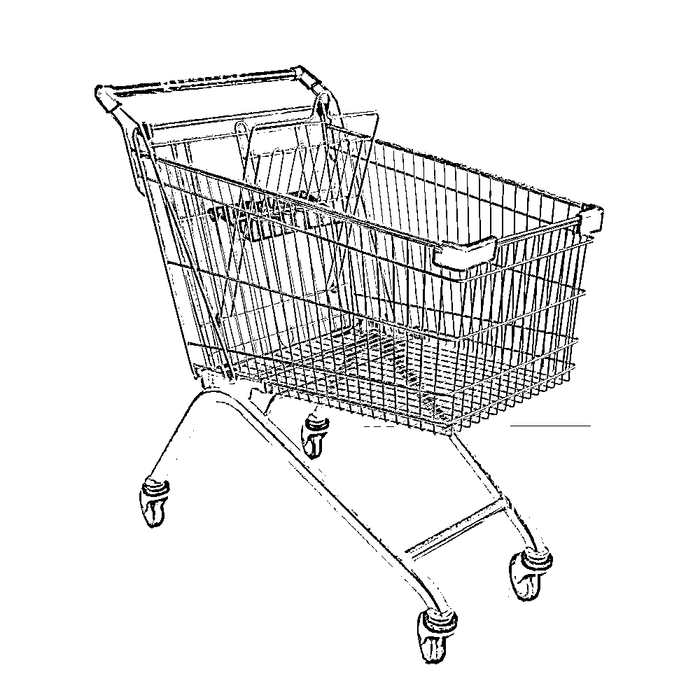
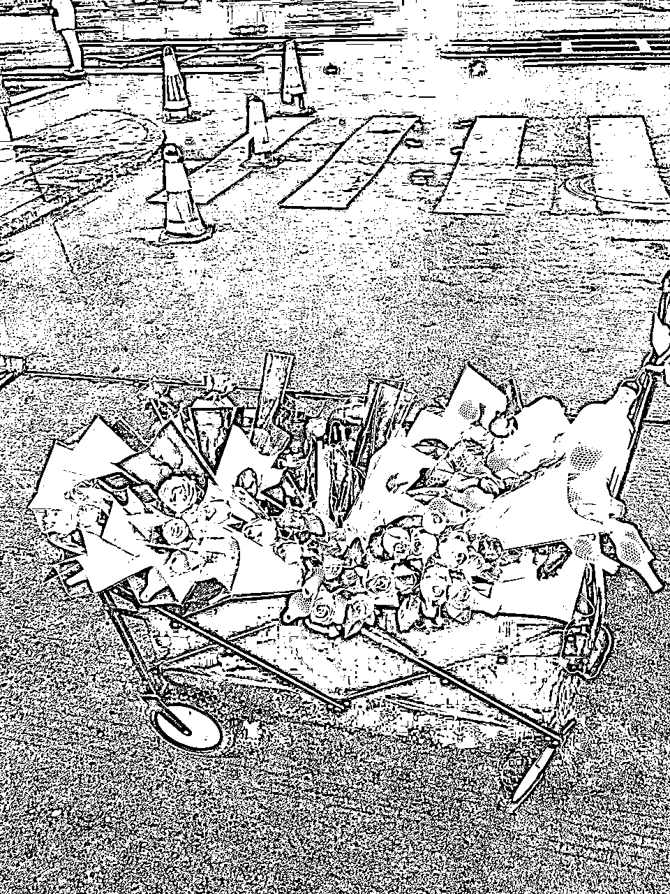
手推车和露营车是比较方便，当你遇到城管的时候，迅速调转方向，开溜神器。（当那些没有推车，手抱着到处躲避城管的同行，手酸死腿酸死的时候，拼死了同行，你就胜利了→_→）
我提到的所有物料，全都是我实战8年摆摊卖花的技巧，缺一不可💥💥💥！！！
曾经我没带小闪灯卖不出价，没带小板凳，累了只有坐路边和地上，摆摊灯没带，晚上花看不清，没人要。捆绑绳子没有，拉着你的车，你的花你的水桶到处跑，搞掉你的赚钱心态。车子搞得差，一直拖慢自己卖花进程，被城管撵着跑，你还没办法→_→
❤️特别提一下：
闪光小灯，晚上卖花神器，卖出价格的神器。
小板凳，你的体力恢复神器。
水桶，你的花保鲜神器！！！
好的推车，事半功倍~
市场情况
卖玫瑰其实很好，每年有214情人节，三七女神节，三八妇女节，520，七夕节，教师节，光棍节，圣诞节、毕业季都可以。卖的起价格的还是214情人节、520，七夕节、毕业季，供需很多，其他节日价格一般，自我斟酌
搞好了，一天2000-3000利润没问题。
2023年2月14日情人节，我带了2个朋友一起卖花，他们没经验，实测每人人均500+利润，今年是真的大环境不好，消费降级。以前卖花，少于1000利润一天都是失败，今年确实比以往难一些，需要卖花差异化，提升客单价和利润。
我们今年在成都春熙路卖花，居然看到很多情侣不像以前人手一束花，你问的时候很多回应不如吃喝点好的，更务实了，这是我无法想象到的，而且摆摊卖花的同行也超级多。估计现在会好一些。
首先我们要准备就是货源，这个十分重要。节日前2周左右，你就要开始踩货源，如果实在来不及，现在立刻马上去问问玫瑰的价格！为之后买多少玫瑰做预估打算。
新手不要买太多，你搞不定，我血的教训，曾经搞过800朵玫瑰，前期梯刺包装筹备都花了一下午，而且是卖花当天花的时间整理，把卖花大好的时间浪费了。
💥❤️如何选择玫瑰：
1、找到当地的花卉批发市场，多问一些摆摊的或者花店，找有经验的人问。找到优质、价格最合适的货源也是非常必要的。你才能有利润，成都首选三圣乡花卉市场。
2、你不要觉得哪个价格便宜就买哪个，我亲身经历，买了放在水桶里保鲜，看着特别好，但你当天打开的时候，瞬间蔫了。损失超级大，而且没卖相，我虽然卖花很少赔，但没赚1000以上就挺失败的。为啥容易蔫，因为七夕是夏天，很热，花保鲜期更短。
3、选择大骨朵的，云南卡罗拉这个品种很好，我就选她，买任何东西都要货比3家，可以分批拿货，比如拿600朵，你每家拿200朵，如果这家花不好，其他的还能保命。
4、你可以选择的品类有，红玫瑰，白玫瑰，粉玫瑰，甚至彩色，蓝色妖姬，永生花等。新手尽量就选择80-90%红玫瑰，一点蓝色妖姬和其他玫瑰就好。
红玫瑰是最好卖的品类，没有之一！！你带上其他玫瑰，可以提现差异化，搭配提价使用。
永生花提前可以接受预定，朋友圈浪潮式发售，永生花就是干花，放在某个容器里。建议新手不要买永生花（我曾经赔过大几千），不适合摆摊，且不易携带~可做朋友圈提前发售，预定，即使卖不出去，因为永生花不会凋谢不会坏，之后也可以卖。
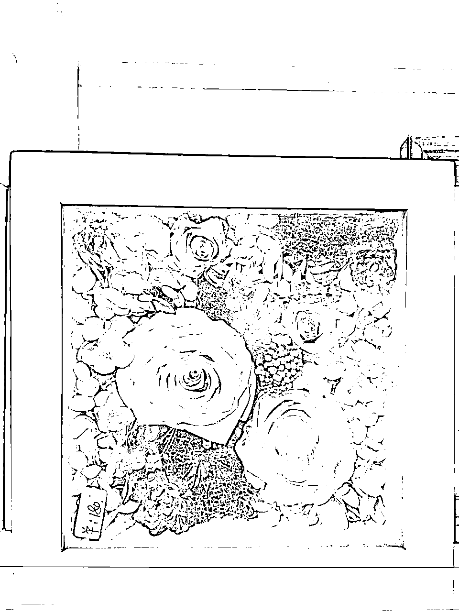
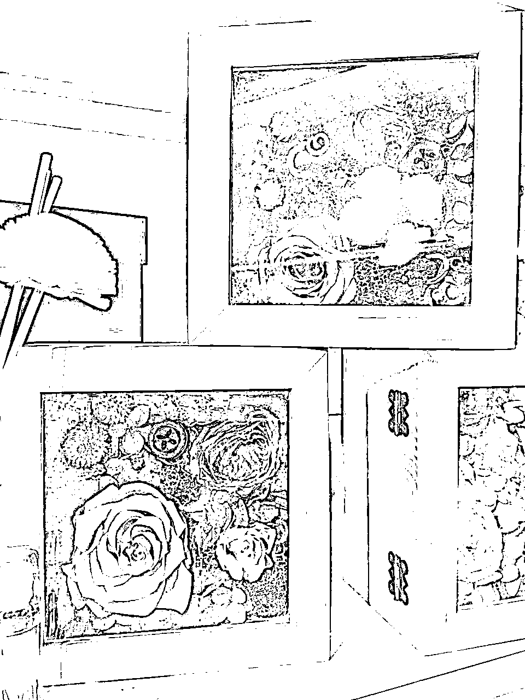
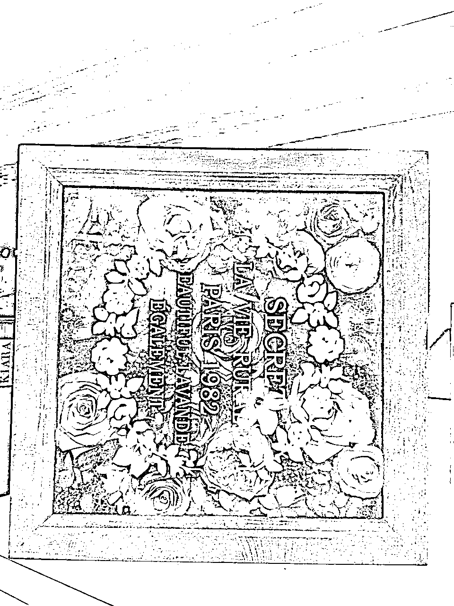
这些都是永生花，进价贼便宜，很多大牌也会搞，例如野兽派、roseonly，诺誓
几十的成本卖到三四百，利润多吓人。但大牌可能是自制，加上精美包装，就感觉不一样了，其实自己也可以来。
红玫瑰，白玫瑰，粉玫瑰，甚至彩色，再购买的时候买点满天星，情人草之类的，可以包花束点缀，花束是摆摊能够赚钱的最重要的一环，因为人家卖一朵朵的，而你会包花束，甚至礼盒花束，我都自学过。
📌进价是大家最关心的环节，我只以成都为例，成都一般1.5-2元，旺季是1元左右，一定要选择云南卡罗拉或AB级别玫瑰，花骨朵大的，你后面卖可以卖10元。这个进价也根据季节、花的紧俏与否决定，我买过最贵的3-4元一朵。
蓝色妖姬，进价4元一朵，可以卖20-30元一朵。卖的时候加一句，送给你身边最特别的她即可，递上蓝色妖姬。
而永生花，有做好的现成货源，几十到100多不等，可以卖298-900不等。
💥💥💥新手建议：买个50-100朵练练手，如果2-3个人，可以尝试200-300朵。
当你提前2周踩了货源以后，现场问老板说提前3天拿货价多少，定下来即可（但一般提前3天的价格，都是提前3天去问才问的出来）。
三天内拿下，你的价格是最合适的，花也可以保鲜到七夕，只要你买几个水桶，花枝放在里面吸取水分，就可以保鲜了，貌似还有药水之类的保鲜法，我没用过，不太清楚。
提前三天拿到家里保鲜的时候，你一定要放在厕所这种潮湿的地方，保持花的新鲜。
你买回来大多是这样的，想要打开，你可以让商家帮你剃刺，会多收一笔不菲的费用。我都是自己剃刺，买好工具，3个人六七百朵，花2个小时就可以了，会遍体鳞伤，注意安全。
只做梯刺处理，然后每个花用单个包装纸包装好，插在水里保鲜，这样保鲜一般可以7天左右。（千万不要把花骨朵的包装打开，打开后花很容易蔫了，卖不出去，如图所示即可）。到卖的时候再把花骨朵打开，自然花开即可。
这样家里准备完，直接拿到现场就可以开卖了，轻松省力，千万别把这些准备工作，带到现场去，会浪费你赚钱的时间。
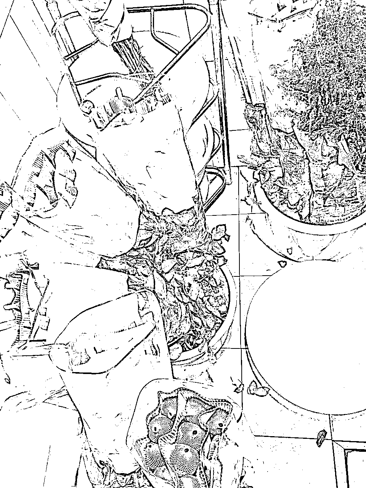
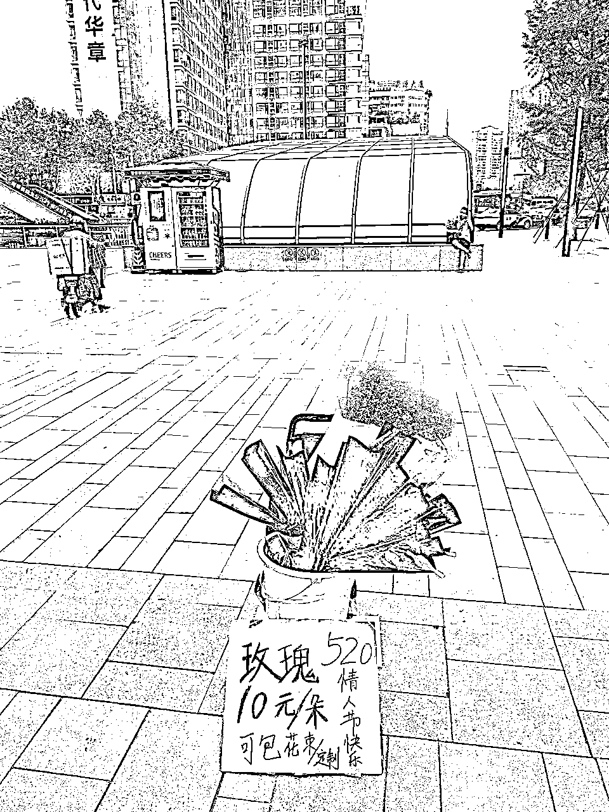
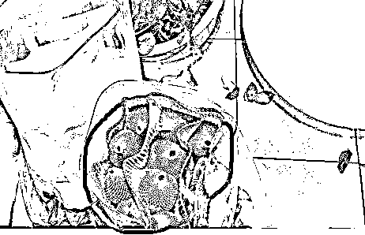
卖花选择时间段，拿七夕举例，七夕前一天晚上8-9点就可以去商圈和酒吧去卖了，可以卖掉一批。
第二天一早上班6-7点即可到达商圈，开始卖，很多人看到花就会定和买。
晚上可以直接到酒吧一条街，喝醉的人，卖的起高价，只要你嘴甜一切皆有可能，可能他们随手掏钱买开心，脸皮厚点直接可以进酒吧里面卖，给点好处费给服务员就行，或者门外卖。
根据你的花卖的如何，最迟到后半夜4点，那时候酒吧还有点人，是你最后清货的时间，结束。
可以搭配小熊玩具和TT卖。
这3个时间段我测试过，对于新手很难坚持，对于想要在七夕这个时间段卖个好收益。根据自己能力，自己准备的花，人手，来定卖花时间，做能力范围内的事就好。你早点卖完，早回家哈哈哈，后面我都买少点花，赚个大概就好了，人不要贪心哦，我曾经贪心买太多，给自己累够呛，利润却没太多。
你带这么多花，2-3个人实际六七百朵，其实是很费力的，有面包车是最好的解决办法，或者地铁公交到指定商圈。打车，很多车看到这么多花，是无法上公交的。如果新人带的花少，自行想办法解决就好。
你带600-700朵花，至少2-3个手推车。
小技巧，可以找个店铺放下一部分，卖完一批，再回来拿货，轻松点。给别人一点寄存费，一般酒店前台说点好话，好的酒店更容易放。
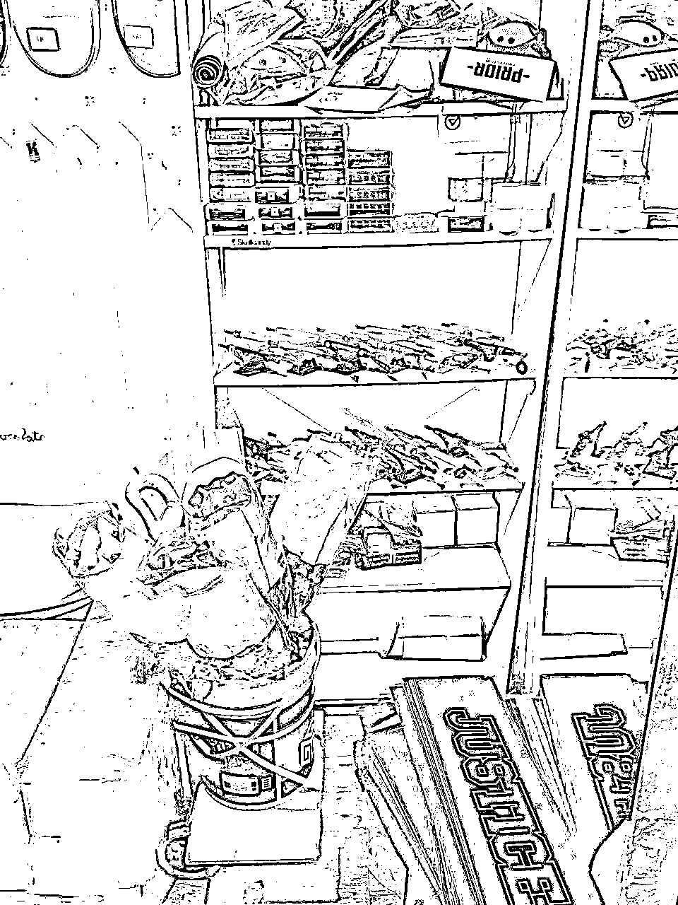
我玩滑板10多年，我就是选择滑板店存放，送店员和店长一些花即可。
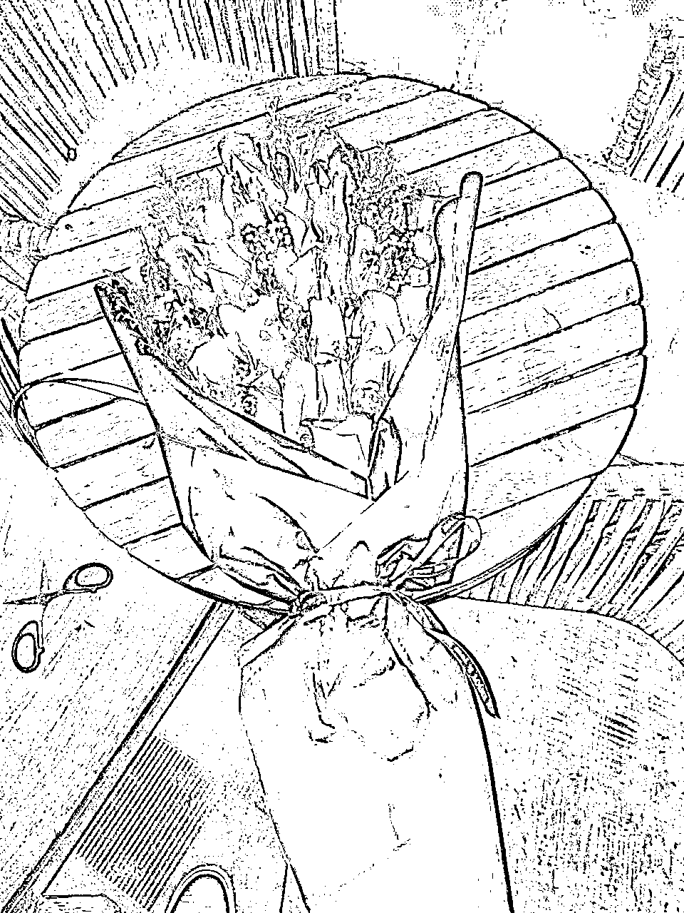
会包花束很占优势的，这是29朵，我包的，直接报价299，都有人要。我这是简易的包花束方法，不需要花泥，熟练的花，一束花5-10分钟即可包好。
50的成本，249的利润。
货源还要记得买包装纸，扎带，黑色高端一些，或者红色。一定包装纸不要复杂，简约的高级些。
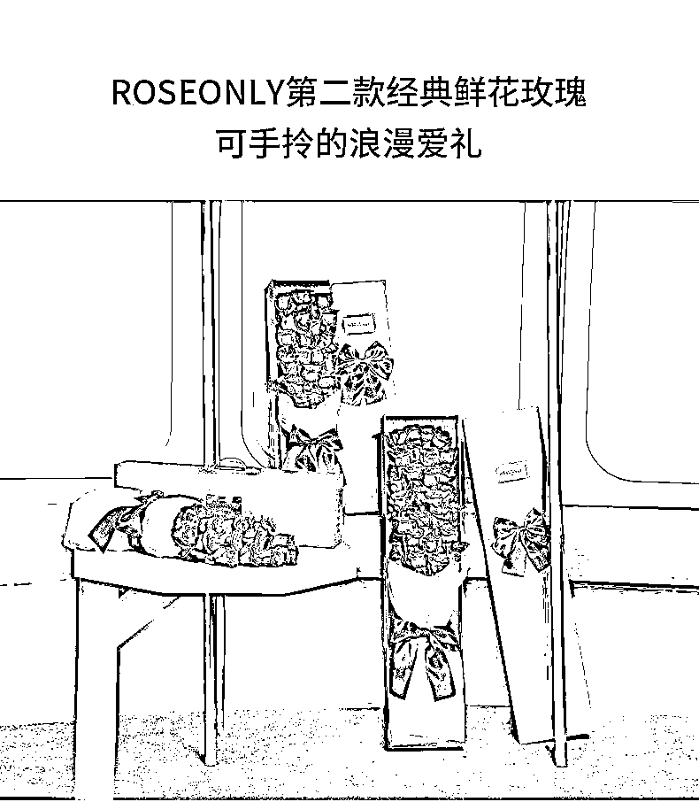
你还可以做这种盒装花束，其实比直接做花束简单多了，跟摆拼盘似的
一盒卖200元以上即可，根据花束的朵数来灵活定。
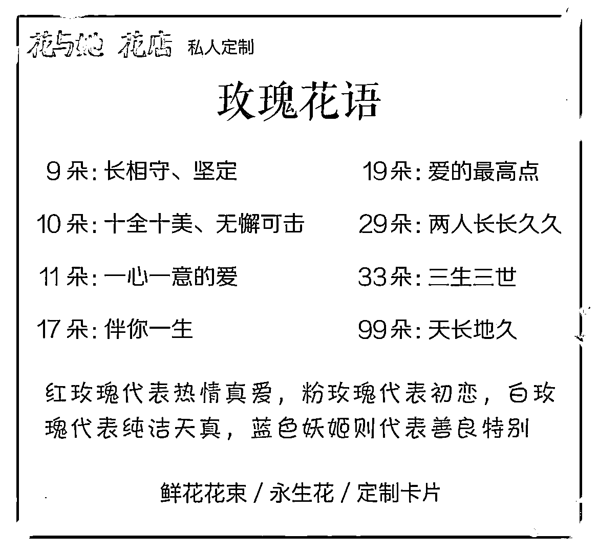
卖玫瑰，花语也超级重要。
这是我自主创建的”花与她“花店的花语，跟客户介绍，有代入感。
这是花语，记得跟顾客介绍，你的目的是让顾客卖更多，更快交钱，就可以多推荐29朵（两人长长久久），33朵（三生三世）。
如果做花束，让他等20-30分钟。回来取，留好电话号联系。
一个人包，另一个人继续卖即可
单朵10元，别人找你买几朵，可以适当便宜点，早点卖出去是目的。别死磕
蓝色妖姬20-30，成本4元，别人降价，你可以随意去卖
1、找一个商圈人流量大的地方驻留，然后开始叫喊，生意都需要吆喝，才能吸引人买。例如叫卖，爱她就送她朵玫瑰吧，来支玫瑰吧，祝你们情人节快乐~
2、牌子记得做一个，如果有条件可以准备个发光灯牌写上东西价格来卖（淘宝拼多多70元左右一个）。白天好用，晚上开了闪灯也好用。用这个，别人看起来就比其他摊位有格调，愿意驻足买
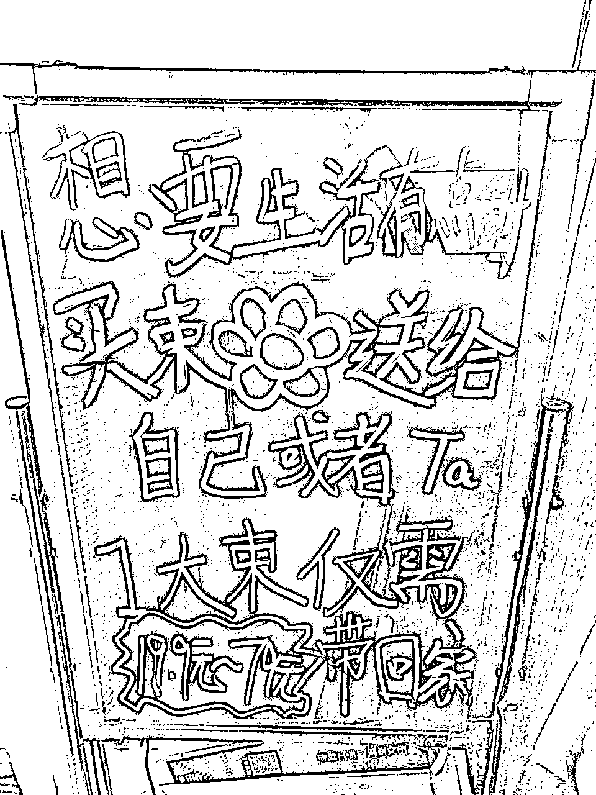
3、遇到别人买一朵，你就推11朵（一生一世，一心一意的爱），29朵（两人长长久久），33朵（三生三世）。灵活推荐根据别人反应。如果别人觉得多了，你说3朵代表我爱你，7朵代表一星期每天都爱你，都是我自己编出来的，就是为了多卖点。你多卖也可以稍微优惠点，七夕节很多人就喜欢冲动消费
4、男生买，你就说买29朵女生一定会懂你心意的。如果女生在旁边，夸他女朋友漂亮，女生有时候会说不要买不要买，你说买了她一定开心什么的。也会经常遇到女生拒绝男生买，这种情况很多，多练手，脸皮厚，不要在意，找下一个顾客就好
5、晚上开露营灯，闪光小灯围绕在玫瑰上，让你的摊位最容易被发现。
6、在空闲的时候，准备个1-2个花束，类似7朵，11朵，29朵的，快速卖掉话术，提高卖货效率和客单价。尽量包的越好看，搭配的越好看越好。自己学习下，悟一下，曾经有朋友说我有这方面天赋，不知道真假→_→
7、准备少量的蓝色妖姬，10朵，卖20-30一朵（成本4元左右），告诉男生，送给特别的她，有时候晚上卖的时候，灯光洒在蓝色妖姬很好看。
8、晚上去酒吧街、夜店附近卖的时候，一般不让你一直停留，如果运气好和保安关系好，地根烟或者交点费用。记得酒吧夜店附近，一定准备好大花束，喝酒的人容易冲动消费，嘴甜些，祝福对方天长地久，如果对方 正在清热，可以说你们好恩爱啊之类的，买一束花送美女吧，自己编台词。敢于推销卖的更快
9、如果你在的区域没啥人流量，或者生意，要马上转战地址，或者吆喝，主动寻求改变。
城管都是会穿蓝色衣服，有点眼力尖，迂回躲着S型路线跑
如果真的被抓到，别正面刚，给他个烟或者请他喝水，赶紧溜。只做游走的商贩。偶尔找个合适的人流量大的地方停歇就好。城管本职工作而已，当他离开，你再回去也可，灵活点。
因为商圈一定会城管多，忍不了这个，还真的没法摆摊
酒吧也一样，会有保安，管的超级严。如果你认识酒保，都可以跟他合作，卖给里面的情侣，外面呢，也很好卖。
晚上一般9点-10点就可以到酒吧场了
算下成本600朵，500朵玫瑰，100朵蓝色妖姬
500x2.5+100x4=1650元成本
其他杂物成本350元左右，共计成本2000元
你能卖：
500*10=5000
100*20=2000
5000+2000=7000元，你还会降价销售、损耗等，大约6000元销售额把
6000-2000=4000元纯利润，2人合作足以
💥💥💥这是理想业绩哈！！！自己根据自身能力去搞！！！
找个大型超市租，或者闲鱼买，或者借。露营车闲鱼收个大尺寸的。
当你新手买的花比较少，很快卖完的时候，可以等着那些卖不动的同行，你比成本价更低去收，他们没有手推车，没有小板凳，累P了，有的人是接受你条件的。并且他们帮你提刺了，包装了等等。我试过，没经验的同行甚至会扔进垃圾桶，只是为了七夕节摆摊玩而已。还有很多美女去摆摊玩。
这个损招，是我经常卖不完后，少拿货。想出来的，一般人我不告诉他→_→
找到小区群，附近的闲置群，成本价处理掉，清货一定要快，回血就好。
1、脸皮厚点，会吆喝。行动力强，说做就做
2、该地区档口，东西受众是否对口，优选超级大商圈，例如：长沙坡子街、成都春熙路、重庆解放碑
3、是否能坚持，能吃苦，不怕脏，不怕累
1、手推车（最大尺码最好，货放的多，利润更大），或露营车
2、水桶，装花用的，保鲜用的，非常重要，花损耗问题就靠水桶了。
3、固定水桶的绳子，锁紧绳
4、剪刀、小胶带、闪光小灯（一定要，晚上闪起来非常好看，卖的起价），摆摊灯（晚上使用）
5、提刺工具，单个的花束包装袋，花束包装纸，绑带（包装绳），包装盒等
6、折叠小凳子，摆摊休息使用，七夕摆摊是个持久战。
1.如何选花
2.前期准备，提刺，包装
3.实操环节：卖花时间选择，实际操作环节，销售技巧，如何躲避城管，理想测算业绩
4.卖完后，如何低成本收花，提高收益
5.如何七夕花没卖完，怎么处理
嗯呢还没完，现场还有很多不可抗力，需要临时发挥。
例如下雨，刮风，提前做好预防
送大家一些摆摊秘籍，见下方即可↓↓↓。
之前疫情我摆摊还延伸过很多东西。网红气球，海纳纹身，家里的二手物品
每一样都有不同的准备细则，有感兴趣的私聊我就好
本人之前专注于微信生态服务、数据服务、分销体系搭建。有需要勾搭即可
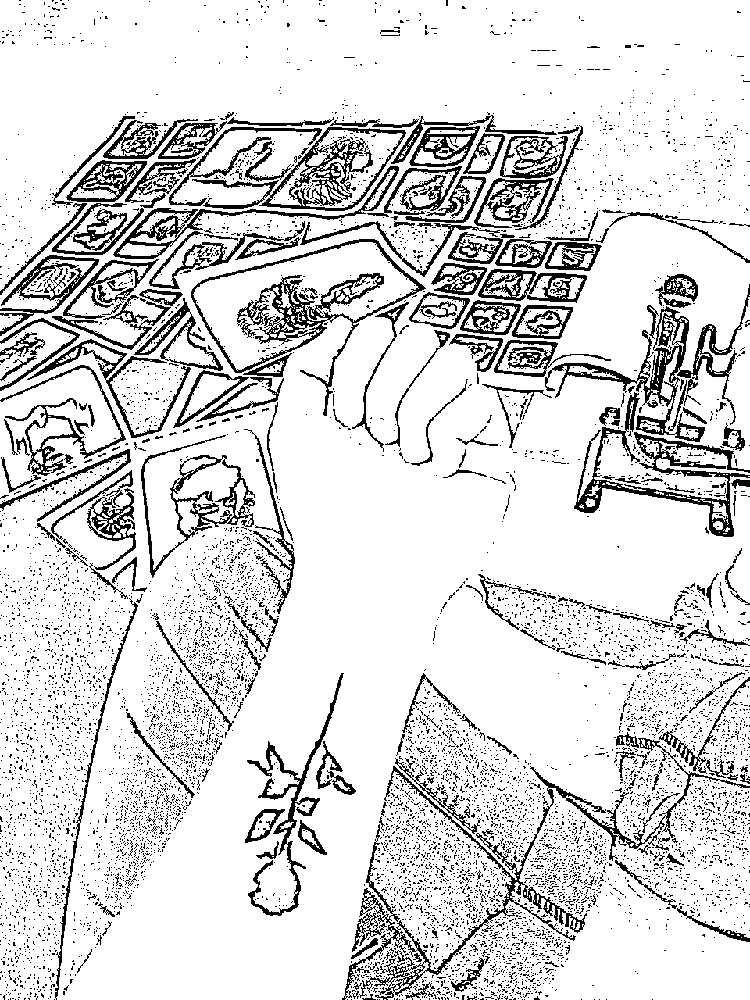